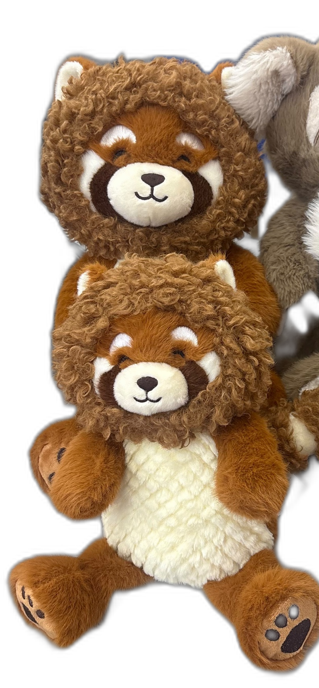
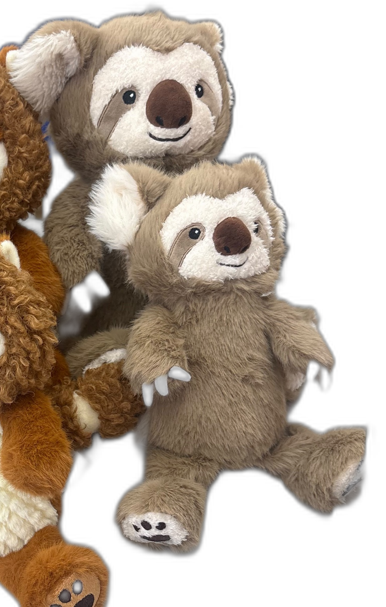

Two animals. Two sizes.
שתי חיות. שני גדלים.

Red Panda
פנדה אדומה

Sloth
עצלן
3 lb
Large · ≈16 in
גדול · ≈16 אינץ׳
Prototype target weight 3 lb
משקל יעד לאב-טיפוס 3 lb
2 lb
Small · ≈12 in
קטן · ≈12 אינץ׳
Prototype target weight 2 lb
משקל יעד לאב-טיפוס 2 lb
Weights to be tuned in wear testing · spare inserts sold separately
המשקלים יכוונו בבדיקות · תוספים חלופיים נמכרים בנפרד
Kids pick the animal by the feel they like.
ילדים בוחרים את החיה לפי התחושה שהם אוהבים.